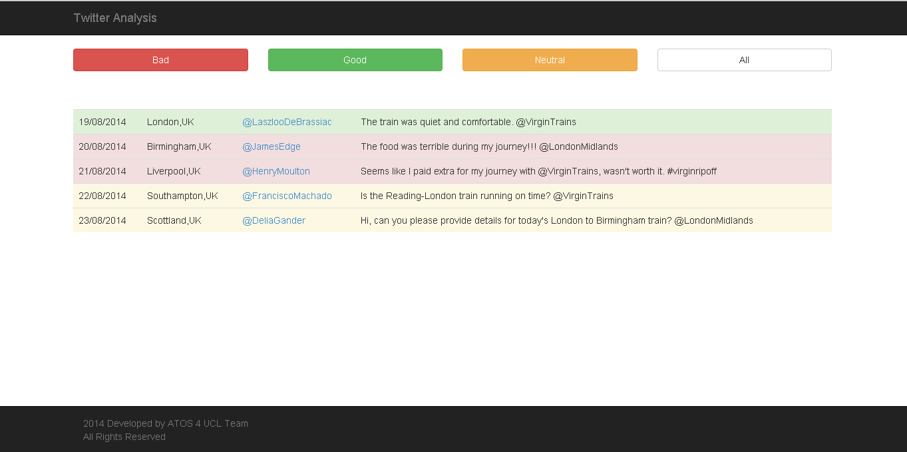
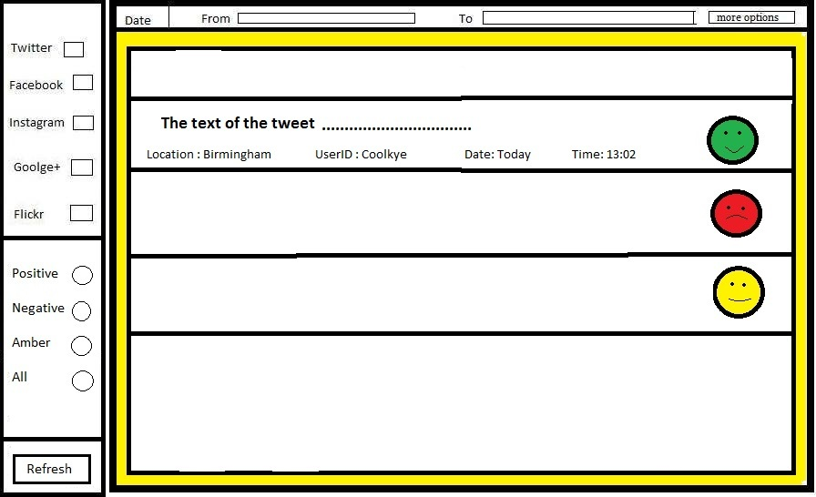

What Happens Next?
The team was expected to deliever a prototype with the basic functionality of fetching tweets from Twitter and displaying them as shown below by end of term one. The tweets were to be colour-coded and the buttons weren't necessarily supposed to be functional. However, the team was able to perform sentiment analysis on the tweets fetched from Twitter and obtain full button funtionality. Although the team exceeded requirement expectations, there were a few aspects that were not achieved like displaying the date, location and username and not just the tweet. The client is happy but not completely satisfied because the team delieverd more than the requirements but still missed out on a few aspects. The team is glad to have done additional work to make up for the few bits that couldn't be implemented.

The next step in this project is to develop an algorithm that classifies tweet text into one of the three sentiments good, bad and neutral. The team will use Natural Language Processing Libraries and Techniques (further details are available in the
Research section) to build the algorithm. and will refine it to the point where there is an acceptable error rate, possibly 10%-20%. If the error-rate is achieved within the allotted timeframe, it will be worked upon further to increase accuracy else the help of an API might be seeked.
Currently, the prototype works only with tweets from Twitter. This functionality will be extended to include posts/statuses form other social media platforms. Also, some further data needs to be attached to each result in the project output table like the name of the platform from which it was fetched, etc. When the team is able to display information form a range of different socila media platforms, it will be decided to either make an algorithm to group the data in a useful way i.e. clustering the data from different social media platforms and sorting this data in a pre-defined order or display the data with an alternate perspective.
There will be a re-direction mechanism built into the back-end of the project to display only the information relavant to the person using the system.This means that a further classification system which clusters data into a given number of fields (ex: Train operator, Janitor, Toilet manager etc.) and dispatches the tweets to them will need to be configured. The most sensible way to do it, is through a login screen where the credentials would be matched against a secure database and upon validation, the user will be re-directed to the page specific to the user. This brings up security concerns such as securing the database from intrusion as senstive data is available upon login. Further research will be carried out to establish what security measures will need to be implemented and provided.
The protype built by the team is running using PHP. The choice of PHP was appropriate because there was no room for overcomplication of some features of the implementation which would have been the case if the team would have chosen other language. The team aims to do the final application using Django, but if it happens that a PHP solution provides a smoother and less complicated alternative then PHP will be given priority.
A rough sketch of what the final UI will look like is given below but more details are available in
Prototype and
User Interface section.
